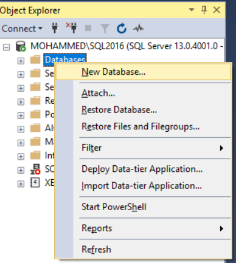

Saving data into Database
Mohammed Ali
2020-01-21
Database_Saving.RmdIntroduction
This tutorial aim to explain dbparser database functionalities to save the parsed drug information to a desired database for the user benefit.
To do that successfully user has two main options:
- Save the parsed drug tibble(s) into local DBI connection of his own like any other regular
Rtibble. - Save the parsed drug tibble(s) into a database using
dbparserdatabase functionalities.
The first option is byond the scope of this tutorial and can be done using normal DBI tutorial. The second option is what interests us here and it is including three options:
- SQLLite
- RDBMS
- Maria Knowledge Base
The remaining sections of this tutorial will clarify each option in more details.
Please note that this tutorial does not explain how to install these databases as it is out of the scope.
SQLLite
SQLLite is an inmemory database you can use locally easily. To save drugs information using this database just do the following call
where is output_database is the desired file location to save the generated database. If user did not provide this option the default is to save generated tibbles in memory.
DBI Supported Databases
dbparser package uses two database packages DBI and RMariaDB.
DBI separates the connectivity to the DBMS into a front-end and a back-end. Applications use only the exposed front-end API. The back-end facilities that communicate with specific DBMSs (SQLite, MySQL, PostgreSQL, MonetDB, etc.) are provided by drivers (other packages) that get invoked automatically through S4 methods. For more information about DBI package please refer to this link
RMariaDB is much more simple and used to connect MariaDB.
In both cases user needs to do the following:
- provide a working database connection information to either
open_dbfunction that uses DBI package oropen_mdbfunction that uses MariaDB package. - enable
save_tableoption in parser functions.
The following are two examples of how to make the connection with SQL Server and Maria DB
SQL Server
- Make sure you have a working connection to SQL Server instance

- Create new empty database to store drug information 
- Provide this information to
open_dbfunction
- Enable
save_tableoption in parser functions. - Call
close_dbmethod after finishing from parsing to close your database connection properly.